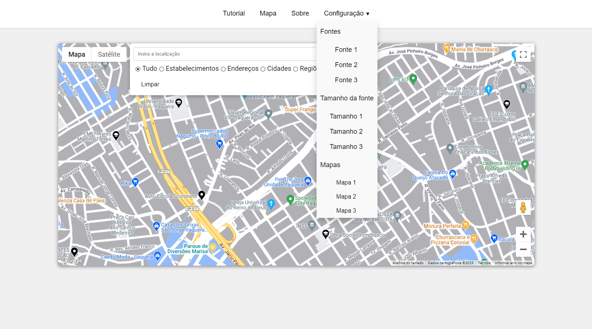

Fontes
Tamanho da fonte
Com o rápido crescimento da tecnologia e a crescente presença da Internet na vida de todos, quem não cresceu nesse meio possui dificuldades para se adaptar à tecnologia, com isso, nosso grupo decidiu por criar um site acessível para essas pessoas, que fazem parte, principalmente, da terceira idade, com algumas configurações predefinidas de fonte e tamanho das letras, que podem ser alteradas pelo usuário de forma prática e fácil, além de três estilos de mapa, tudo isso no botão de configuração.
Nossa ideia com o mapa é de buscar lugares que possam ser de interesse, para isso utilizamos a API (biblioteca) do google maps para criar o mapa. O mapa possui alguns filtros e outros estilos de visualização, como o google street view para visualizar as ruas e o mapa por satélite.
Para auxiliar na utilização do site, criamos uma página de tutorial com as cores dos ícones que aparecem no mapa e um vídeo de tutorial explicando melhor como utilizar o site. Também foi elaborado uma pesquisa sobre cores de contraste para melhor visualização dos elementos no site.
Se tiver algo que podemos melhorar, envie uma mensagem: